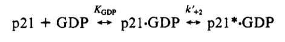

Ras proteins are GTPases¶
Anatomy of Ras¶
For a diagram of the primary structure of Ras, see http://www.ncbi.nlm.nih.gov/pmc/articles/PMC3915522/figure/F1/).

# Preliminaries
from pysb import *
from pysb.macros import bind, bind_table, equilibrate, _macro_rule
def ras_monomers():
# Define the site structure for various Ras family members. All of the
# Ras proteins have the following structural/regulatory features:
# The sites are as follows:
# gtp: binding site for GTP/GDP
# gef: binding site for Ras-GEFs
# gap: binding site for Ras-GAPs
# p_loop: p_loop
# s1s2: Switch 1 and Switch 2 regions
# CAAX: C-terminal region responsible for membrane binding
# mutant: Specific point mutation of Ras
for ras_name in ['KRAS', 'NRAS', 'HRAS']:
Monomer(ras_name,
['gtp', 'gef', 'gap', 'p_loop', 's1s2', 'CAAX', 'mutant'],
{'s1s2': ['open', 'closed'],
'mutant': ['WT', 'G12A', 'G12C', 'G12D',
'G12R', 'G12V', 'G13D', 'Q61L', 'Q61H']})
def nucleotide_monomers():
# Guanine nucleotides
# p: Binding site for binding Ras ('p' for phosphate)
# label: Fluorescent label used in some experiments (mant-GTP/GDP)
Monomer('GTP', ['p', 'label'], {'label': ['n', 'y']})
Monomer('GDP', ['p', 'label'], {'label': ['n', 'y']})
Monomer('Pi', []) # inorganic phosphate, used for GDP/GTP recycling
Switch 1 and Switch 2 change conformation upon binding of GTP:
[PMID18568040]: The structural differences between the RasGDP and the RasGTP conformations reside mainly in two highly dynamic regions, termed switch i (residues 30–40) and switch ii (residues 60–76). Both regions are required for the interactions of Ras with upstream as well as downstream partners (see also FIG. 2a). The binding of GTP alters the conformation of switch i, primarily through the inward reorientation of the side chain of Thr35, thereby enabling its interactions with the GTP γ-phosphate as well as the Mg2+ ion. Similarly, the γ-phosphate induces significant changes in the orientation of the switch ii region through interactions it establishes with Gly60 (FIG. 4b).
A side note on alternative splice variants:
[PMID3304147]: The three functional ras genes code for highly related proteins generically known as p21 (71). The p21 coding sequences of each of these genes are equally distributed in four exons except for the K-ras-2 gene, which possesses two alternative fourth coding exons (exons IVA and IVB) that allow the synthesis of two isomorphic p21 proteins of 188 and 189 residues that differ in their carboxy terminal domains (54, 60, 72).
Ras binds GTP and GDP¶
A general statement of Ras GTP binding and catalytic activity, found in a review:
[PMID3304147]: ras proteins, independently of their phylogenetic origin, have been shown to bind guanine nucleotides (GTP and GDP) ([PMID3304147_22] [PMID3304147_23] [PMID3304147_24] [PMID3304147_25]) and possess intrinsic GTPase activity ([PMID3304147_25] [PMID3304147_26] [PMID6147754] [PMID6148703] [PMID3304147_29])
Mechanism¶
The binding of Ras to GTP and GDP goes through an intermediate state, in which the nucleotide is at first loosely and then tightly bound:
[PMID9585556]: It has been shown before that guanine nucleotide binding to Ras involves (at least) two steps, with a fast initial binding reaction where nucleotide is bound loosely and a slow isomerization reaction to a tight-binding conformation (Scheme 2). In our reaction schemes, we have indicated the loosely and tightly bound complexes by Ras-GXP_L and Ras-GXP_T, respectively. The change of fluorescence signal occurs during the second step ([PMID2200519], [PMID8552403], [PMID8702787]).
As background, these types of two-step binding equilibria are common in enzyme kinetics:
[PMID2200519]: There are numerous examples of two-step binding mechanisms in enzyme kinetics. A well-documented case is that of myosin ATPase, which displays a relatively weak but rapid initial binding of nucleotides followed by a quasi-irreversible isomerization step, which has been interpreted as a protein conformational change (Bagshaw et al., 1974).
Using fluorescent nucleotides incubated with HRAS, the two steps in the binding reaction were measured and interpreted according to the following reaction scheme, from [PMID2200519]:
We formulate a binding mechanism based on this two-step scheme. We denote the change in conformation that Ras undergoes by changing the state of the switch1/switch2 domains (s1s2) from ‘open’ to ‘closed’.
def ras_binds_gxp(ras, gxp, klist):
# Alias for Ras bound to GXP. Note that these equilibria are for
# Ras that is NOT bound to a Ras-GEF.
rasgxp = ras(gap=None, gef=None, gtp=99) % gxp(p=99)
# Get the rates from the list:
(kf1, kr1, kf2, kr2) = klist
The initial binding step:
bind(ras(gap=None, gef=None, s1s2='open'), 'gtp', gxp(), 'p', [kf1, kr1])
Isomerization/conformational change of Ras resulting from nucleotide binding; also described as the conversion of the nucleotide from loosely bound to tightly bound:
equilibrate(rasgxp(s1s2='open'), rasgxp(s1s2='closed'), [kf2, kr2])
Rates¶
The rates for HRAS + GDP binding were measured at 25C (Table 1, [PMID2200519]). Since only the equilibrium constant K1 was given for the first step, we assume a diffusion-limited on-rate of \(10^7\ M^-1\ s^-1\) for kf1:
ras_gdp_kf1 = 1e7 * 1e-9 # M^-1 s^-1 to nM^-1 s^-1
ras_gdp_K1 = 5.7e4 * 1e-9 # M^-1 to nM^-1 s^-1
ras_gdp_kr1 = ras_gdp_kf1 / ras_gdp_K1 # s^-1
For the second step, the rates were given explicitly as (Table 1, [PMID2200519]):
ras_gdp_kf2 = 14.8 # s^-1
ras_gdp_kr2 = 1.8e-5 # s^-1
The rates given for HRAS + GTP at 25C were similar, though the off-rate for the second state was for some reason not given. As before, we choose a diffusion-limited on-rate of \(10^7\ M^-1\ s^-1\) for kf1:
ras_gtp_kf1 = 1e7 * 1e-9 # M^-1 s^-1 to nM^-1 s^-1
ras_gtp_K1 = 1.25e5 * 1e-9 # M^-1 to nM^-1 s^-1
ras_gtp_kr1 = ras_gtp_kf1 / ras_gtp_K1 # s^-1
ras_gtp_kf2 = 16.7 # s^-1
Now we construct a list of these four key rates for HRAS/GTP and HRAS/GDP binding. Note that the HRAS/GTP list uses the kr2 rate for HRAS/GDP since the rate was not reported for GTP.
ras_gtp_klist = [ras_gtp_kf1, ras_gtp_kr1, ras_gtp_kf2, ras_gdp_kr2]
ras_gdp_klist = [ras_gdp_kf1, ras_gdp_kr1, ras_gdp_kf2, ras_gdp_kr2]
We specify the binding of HRAS to GDP and GTP according to the measured rates:
def hras_binds_nucleotides(model):
HRAS = model.monomers['HRAS']
GDP = model.monomers['GDP']
GTP = model.monomers['GTP']
ras_binds_gxp(HRAS, GDP, ras_gdp_klist)
ras_binds_gxp(HRAS, GTP, ras_gtp_klist)
Nucleotide exchange experiments on a number of KRAS mutants were published in Hunter et al. [PMID26037647]. These experiments found that the exchange rates among a number of mutants were indistinguishable from wild-type KRAS, at 0.002 \(sec^{-1}\), with the exception of G13D, which was considerably faster (0.027 \(sec^{-1}\) for GDP and 0.018 \(sec^{-1}\) for GTP). If we use the mechanism for nucleotide binding described by Wittinghofer in [PMID2200519], the exchange rate for GDP is dominated by the reverse rate of the second step of nucleotide binding (from loosely to tightly bound). Therefore we use the measured rates from this study to set this rate while keeping the same rates as previously published for HRAS.
Warning
The hydrolysis rate of GTP->GDP affects the observed GTP exchange rate because it allows the GTP exchange rate to be affected by GDP dissociation after hydrolysis of GTP to GDP. What’s not clear, however, is if the published rates for intrinsic GTP hydrolysis apply to the exchange experiment, which included only 10 mM Mg2+ rather than 40 mM Mg2+ as used in the hydrolysis experiment. In this case it might be better to model the exchange assay as having significantly diminished GTP hydrolysis.
def kras_binds_nucleotides(model):
KRAS = model.monomers['KRAS']
GDP = model.monomers['GDP']
GTP = model.monomers['GTP']
# Iterate over all of the mutants that we're considering
for mutant in KRAS.site_states['mutant']:
kras = KRAS(mutant=mutant)
# Set a different rate for G13D vs. WT and all other mutants
if mutant == 'G13D':
mutant_gdp_diss_rate = 0.020
mutant_gtp_diss_rate = 0.015
else:
mutant_gdp_diss_rate = 0.0015
mutant_gtp_diss_rate = 0.0015
# Re-use the rates from [PMID2200519] for the initial association
# and forward isomerization, but use the rates from
# [PMID26037647] to set the slow reverse rate:
kras_gdp_klist = [ras_gdp_klist[0], ras_gdp_klist[1],
ras_gdp_klist[2], mutant_gdp_diss_rate]
kras_gtp_klist = [ras_gtp_klist[0], ras_gtp_klist[1],
ras_gtp_klist[2], mutant_gtp_diss_rate]
# Call the binding macro
ras_binds_gxp(kras, GDP, kras_gdp_klist)
ras_binds_gxp(kras, GTP, kras_gtp_klist)
In the absence of new information, we use the same rates for NRAS and were published in [PMID2200519] for HRAS:
def nras_binds_nucleotides(model):
NRAS = model.monomers['NRAS']
GDP = model.monomers['GDP']
GTP = model.monomers['GTP']
ras_binds_gxp(NRAS, GDP, ras_gdp_klist)
ras_binds_gxp(NRAS, GTP, ras_gtp_klist)
Ras converts GTP to GDP¶
Mechanism¶
The mechanism for hydrolysis of GTP to GDP by Ras is fairly straightforward to implement, but we note that we model this reaction as only taking place once the nucleotide has been established in the “tightly bound” state. We also note that the conversion involves replacing one molecule of GTP for a molecule of GDP and Pi (inorganic phosphate).
One additional consideration is whether this reaction can take place while a Ras-GEF, e.g., Sos, is bound. Though there is a short-lived intermediate in which a GEF and a tightly-bound nucleotide are both bound to Ras (see Ras regulation by GEFs), it seems sensible to assume that this state cannot hydrolyze GTP due to the conformational instability of the protein in this state. More to the point, the hydrolysis reaction is relatively slow compared to the lifetime of this intermediate, thus there is likely to be very little flux occurring via this intermediate. Thus we specify that the reaction occurs only when Ras is not bound to a GEF:
def ras_converts_gtp_to_gdp(model, ras, kcat):
GTP = model.monomers['GTP']
GDP = model.monomers['GDP']
Pi = model.monomers['Pi']
ras = ras()
ras_name = ras.monomer.name
# If the Ras monomer we've got doesn't have any information for
# mutants, explicitly name it as the wild-type allele
try:
ras_mutant = ras.site_conditions['mutant']
except KeyError:
ras_mutant = 'WT'
k = Parameter('k_%s_%s_gtpase' % (ras_name, ras_mutant), kcat)
# The intrinsic hydrolysis reaction only occurs when a RasGAP
# is not bound, since the RasGAP intervenes directly in the
# active site.
# Instantiate the rule for both labeled and unlabeled GTP/GDP
Rule('%s_%s_converts_GTP_GDP' % (ras_name, ras_mutant),
ras(gap=None, gef=None, gtp=1, s1s2='closed') %
GTP(p=1, label='n') >>
ras(gap=None, gef=None, gtp=1, s1s2='closed') %
GDP(p=1, label='n') + Pi(),
k)
Rule('%s_%s_converts_mGTP_mGDP' % (ras_name, ras_mutant),
ras(gap=None, gef=None, gtp=1, s1s2='closed') %
GTP(p=1, label='y') >>
ras(gap=None, gef=None, gtp=1, s1s2='closed') %
GDP(p=1, label='y') + Pi(),
k)
Rates¶
GTP hydrolysis by wild-type Ras is slow in the absence of RasGAPs.
[PMID1569940]: It has been reported that the in vitro GTPase activity of wild-type p21, which proceeds at a rate of 0.028 min^-1 at 37°C ([PMID2502546]), is accelerated 100- to 200-fold by GAP, as measured under nonsaturating conditions.
def hras_hydrolyzes_gtp(model):
# Convert 2.8e-2 min^-1 to units of s^-1
wt_ras_hydrolysis_rate = 2.8e-2 / 60.
HRAS = model.monomers['HRAS']
ras_converts_gtp_to_gdp(model, HRAS, wt_ras_hydrolysis_rate)
def kras_hydrolyzes_gtp(model):
kras_wt_hydrolysis_rate = 0
KRAS = model.monomers['KRAS']
hydrolysis_rates = {'WT': 68e-5,
'G12A': 1.3e-5,
'G12C': 49e-5,
'G12D': 19e-5,
'G12R': 1.8e-5,
'G12V': 4.2e-5,
'G13D': 9.6e-5,
'Q61L': 0.8e-5,
'Q61H': 1.3e-5,}
# Iterate over all of the mutants that we're considering
for mutant in KRAS.site_states['mutant']:
kras = KRAS(mutant=mutant)
if mutant in hydrolysis_rates:
mutant_rate = hydrolysis_rates[mutant]
else:
mutant_rate = hydrolysis_rates['WT']
ras_converts_gtp_to_gdp(model, kras, mutant_rate)
def nras_hydrolyzes_gtp(model):
# Convert 2.8e-2 min^-1 to units of s^-1
wt_ras_hydrolysis_rate = 2.8e-2 / 60.
NRAS = model.monomers['NRAS']
ras_converts_gtp_to_gdp(model, NRAS, wt_ras_hydrolysis_rate)
Recycling of GTP from GDP¶
In the cell, GTP levels are buffered to remain fairly constant. To prevent GTP levels from being depleted by GTPase activity in our simulations, we reconstitute GTP from unbound GDP and inorganic phosphate at a very high rate. Since we only create inorganic phosphate (Pi) from the GTP hydrolysis step, this ensures that GTP/GDP levels and ratios will be held constant over time.
def recycle_gtp_from_gdp(model):
GDP = model.monomers['GDP']
GTP = model.monomers['GTP']
Pi = model.monomers['Pi']
k = Parameter('k_recycle_gtp_from_gdp', 1e7)
# Note that only unbound GDP can be recycled!
Rule('recycle_gtp_from_gdp_rule',
GDP(p=None, label='n') + Pi() >> GTP(p=None, label='n'), k)
Rule('recycle_mgtp_from_mgdp_rule',
GDP(p=None, label='y') + Pi() >> GTP(p=None, label='y'), k)
Oncogenic Ras mutants have reduced GTP binding and GTPase activity¶
[PMID18568040]: In 1984, three groups reported that mutated Ras oncoproteins differ functionally from their normal counterparts [PMID6147754] [PMID18568040_42] [PMID6148703]. The oncogenic forms of Ras exhibited impaired GTPase activity, which suggested that the hydrolysis of GTP somehow terminates the activated state of the protein, which is consistent with the presumed analogy to the behaviour of G proteins...Furthermore, the link between the much-studied Gly-to-Val substitution of residue 12 of H-Ras and GTP hydrolysis was made the following year by Frank McCormick’s group, which noted that antibodies that are specific to that region blocked GTP binding [PMID18568040_44].
[PMID3304147]: Early studies have predicted that replacement of Gly12 by any other amino acid residue (except proline) would disrupt the a-helical structure of the amino terminal domain of ras proteins, causing a conformational change that would prevent its proper folding (112-114). Thus, replacement or elimination of Gly12 may create a rigid domain that cannot efficiently interact with the phosphoryl region of the GTP molecule, reducing the GTPase activity of ras proteins. Two additional residues in this domain, Glyl5 and Lysl6, are present in other guanine nucleotide-bindingproteins(109, 111). Substitution of Lys16 by Asn16 significantly reduces GTP/GDP affinity without affecting base specificity, an observation consistent with the idea that these residues are also part of the phosphoryl group (95):
# A key thing to note here is that the mutations in G12, G15, and K16 appear
# to affect the affinity of Ras for GTP and GDP, not the catalytic rate.
[PMID18568040]: Other oncogenic mutations (such as Gln61leu in H-Ras) were also shown to impair GTP hydrolysis [PMID18568040_45] and other oncogenic forms of Ras were later determined to be impaired in GTP hydrolysis (for example, REF. [PMID18568040_46]).
[PMID3304147]: Substitution of Gln61 by 17 different amino acid residues invariably results in decreased GTPase activity ([PMID3304147_25], 117).
[PMID18568040]: The overall Ras structure was shown to consist of a hydrophobic core of six stranded β-sheets and five α-helices that are interconnected by a series of ten loops (FIG4a). Five of these loops are situated on one facet of the protein and have crucial roles in determining the high affinity nucleotide interactions of Ras and in regulating GTP hydrolysis. In particular, the GTP γ-phosphate is stabilized by interactions that are established with the residues of loops 1, 2 and 4 (for example, lys16, Tyr32, Thr35, Gly60 and Gln61; see FIG4b). A prominent role is attributed to Gln61, which stabilizes the transition state of GTP hydrolysis to GDP, in addition to participating in the orientation of the nucleophilic attack that is necessary for this reaction. As such, oncogenic mutations of Gln61 reduce the intrinsic GTP hydrolysis rate, thereby placing the Ras protein in a constitutively active state.:
# Unlike the mutations in G12 and its neighbors, which seem to affect
# activity by affecting GTP/GDP binding, the reduced activity resulting
# from mutations in Q61 appear to be attributed to an affect on the
# catalytic rate.
# As an implementation detail, note that the mutant rate should be
# constrained to be less than the wild type rate through the use of an
# Expression incorporating a scaling parameter between [0, 1].
Autophosphorylation of Ras A59T¶
[PMID3304147]: In addition to GTP/GDP binding and GTPase activity, ras proteins carrying an Ala59 -> Thr59 mutation exhibit an autophosphorylating activity of an, as yet, unknown biological significance [PMID3304147_23]. In all cases, Thr59 has been found to be the phosphate receptor site (106). No transphosphorylating activity has been detected with any ras protein, including those carrying Thr59 mutations:
# Add autophosphorylation of Ras A59T if it later turns out to be
# significant.
Post-translational modifications of the C-terminus¶
An initial study in this area, published in 1982, showed that the mature form of viral H-Ras localized to the cell membrane47. Several months later it was demonstrated that viral H-Ras is palmitoylated at the C terminus; the resulting attached lipid moiety facilitated its association with the membrane48. The functional connection between this lipid modification and Ras function was made by Douglas Lowy’s group in 1984, which showed that lipid binding and membrane association were actually required for the transforming activity of the viral H-Ras oncoprotein49,50.
working with cellular H-Ras, Stuart Aaronson’s group proceeded to demonstrate that this C-terminal processing and membrane recruitment of Ras is a prerequisite to its biochemical activation51.
The molecular mechanisms of Ras lipid processing were laid out over the subsequent 5 years through a series of observations using yeast genetics, protein biochemistry and in vitro cellular systems52–57 (FIGS 2,3).3).
Indeed, the C-terminal CAAX motif, previously found to be important for Ras function, was found to be the target of a post-translational modification that involved the addition of a farnesyl isoprenoid lipid, catalysed by the enzyme farnesyl transferase (FTase).
Subsequent studies determined that this prenylation reaction is followed by the proteolytic cleavage of the AAX sequence, catalysed by Ras-converting enzyme-1 (RCE1) and the carboxymethylation of the now terminal Cys residue by the isoprenylcysteine carboxymethyltransferase-1 (ICMT1) enzyme.
Although these CAAX-signal modifications appeared to be essential for the association of Ras with the plasma membrane, other studies identified the requirement for a second C-terminal signal that facilitates full membrane recruitment and hence full Ras function (for example, see REF. 57). For K-Ras-4B, this second signal is a string of positively-charged lys residues upstream of the C terminus that are sufficient to anchor the protein to the membrane. However, prenylated H-Ras, N-Ras and K-Ras-4A require a further palmitoylation step in which a palmitoyl moiety is attached to upstream C-terminal Cys residues before their anchoring in the membrane is stabilized.